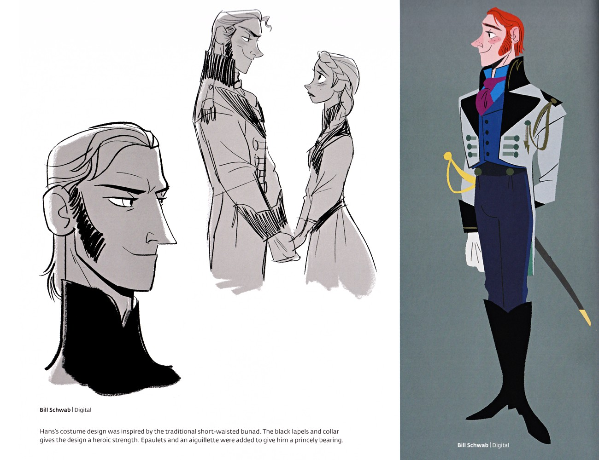

汉斯的性格可以用「变色龙」来形容——他能适应任何环境，让任何人感到安心，但这一切都是伪装。在英俊外表和甜言蜜语之下，是一个冷酷、权力欲极强的反派。他的「双重人格」是《冰雪奇缘》最成功的角色设计之一——观众和安娜一起被他欺骗，直到最后一刻才发现他的真面目。
汉斯的性格如变色龙般适应任何环境让他人安心——在安娜面前，他是温柔体贴的「完美王子」；在艾莎面前，他是彬彬有礼的「外交家」；在公侯面前，他是威严的「摄政王」。他能迅速判断对方的需求，并调整自己的言行来满足对方——这种「适应力」是他「伪装」的核心能力。但这种「适应力」不是「共情」，而是「算计」——他不是真正理解别人的感受，而是在「计算」什么样的言行能达到自己的目的。F1中，他在加冕日迅速判断出安娜「渴望被爱」的心理，用甜言蜜语迅速俘获了她的心——这种「精准的算计」是他最可怕的地方。
汉斯的核心动机是「权力」——作为南方群岛第13顺位王子，他有12个哥哥，几乎没有继位的可能。这种「永远无法继承王位」的处境，让他产生了极强的权力欲——他必须通过其他方式获得权力。他选择了「联姻夺权」——来阿伦黛尔寻找机会，通过婚姻获得王位。他的计划是：先娶艾莎（如果不行就娶安娜），然后制造「意外」除掉艾莎，最后以「摄政王」的身份统治阿伦黛尔。这种「权力欲」让他变得冷酷无情——他可以在安娜即将冻死时说「If only somebody loved you」并灭炉火，可以向公侯谎称安娜已死、自封摄政并判艾莎叛国死刑。他的「权力欲」吞噬了他的人性，让他变成了一个「为了权力可以做任何事」的反派。
汉斯的「伪装」是他最强大的武器——他用英俊外表、甜言蜜语和「完美王子」的形象，欺骗了安娜，也欺骗了观众。F1前半段，他的每一个言行都符合「完美王子」的设定——温柔体贴、彬彬有礼、勇敢正义。观众和安娜一起相信了他的「伪装」，直到最后一刻才发现他的真面目。这种「伪装」的成功，在于汉斯对「人性」的深刻理解——他知道安娜「渴望被爱」，所以他用「一见钟情」和「真爱」来满足她的渴望；他知道公侯「需要稳定」，所以他用「摄政王」的身份来提供稳定。他的「伪装」不是「撒谎」，而是「精准地满足别人的期望」——这比单纯的撒谎更加可怕，因为它利用了别人的「信任」和「渴望」。
当伪装被撕开后，汉斯的「真面目」是冷酷无情的——他对将死的安娜说「If only somebody loved you」并灭炉火，向公侯谎称安娜已死、自封摄政并判艾莎叛国死刑。这种「冷酷」不是「一时冲动」，而是「精心策划」——他的每一步都在「计算」：灭炉火是为了让安娜「自然死亡」，谎称安娜已死是为了「名正言顺」地自封摄政，判艾莎叛国死刑是为了「除掉威胁」。他的「冷酷」是「理性的冷酷」——不是因为「恨」，而是因为「利益」。这种「理性的冷酷」比「情绪化的邪恶」更加可怕，因为它没有「弱点」——他不会因为「良心发现」而放弃计划，只会因为「计划失败」而愤怒。最终，他被安娜一拳打倒落水，关入笼中遣返南方群岛——这是他「冷酷算计」的失败，也是「真爱」对「权力」的胜利。